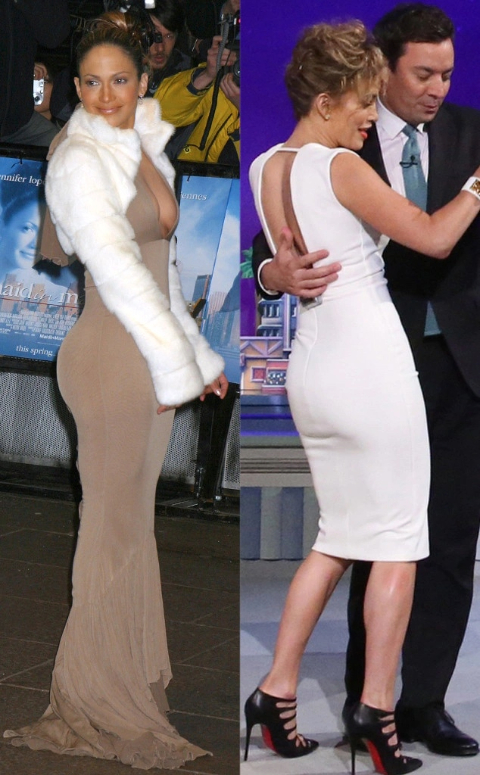
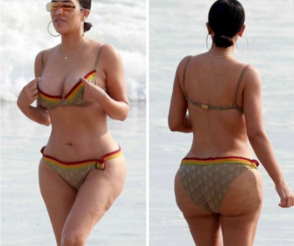

Brazilian Butt Lift
1969
- An individual underwent surgery to add a round
breast implant to their glute muscle to help with symmetry due to atrophy.
1980s-2000s
- Before the 2000s there was a strong desire for an athletic
build for women, and this was included in the glute area.
- Many women were encouraged to do squats to get a more firm appearing rear
and this was reflected in the style of BBL surgeries.

2000s-2020s
- The 2000s brought a big jump in the desire for BBLs and a lot
of this trend can be attributed to celebrities getting surgeries to have a
larger rear. One infamous celebrity for this is Kim Kardashian, whose trend went
as far to push for the redesign of jeans to accomodate these huge backsides.

2020-2023
- What will this new era bring for the rise of BBLs? This procedure is extremley dangerous
and can even lead to death, yet many people have risked their lives and time
to gain this look. With the pendulum swinging back there is now a desire
to reverse these over-the-top glutes. There is still a want for large backsides, but not
as overdone as the previous years.